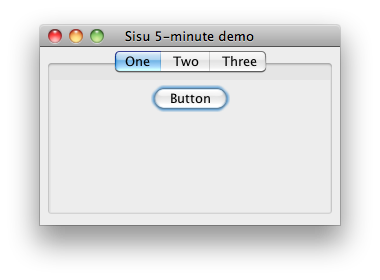

What is Sisu?
Sisu is a set of Guice modules that add classpath scanning, auto-binding, and dynamic wiring. Together these modules make up the Sisu container, but they can also be used individually.
Let's begin with a simple Maven project. Paste the following into a file called pom.xml
<?xml version="1.0" encoding="UTF-8"?>
<project>
<modelVersion>4.0.0</modelVersion>
<groupId>example</groupId>
<artifactId>sisu-5min-demo</artifactId>
<version>0-SNAPSHOT</version>
<name>Sisu 5-minute demo</name>
<dependencies>
<dependency>
<groupId>com.google.inject</groupId>
<artifactId>guice</artifactId>
<version>6.0.0</version>
</dependency>
<dependency>
<groupId>org.eclipse.sisu</groupId>
<artifactId>org.eclipse.sisu.inject</artifactId>
<version>0.9.0-SNAPSHOT</version>
</dependency>
</dependencies>
</project>
What can it do?
Sisu looks for types annotated with @Named, binds them, and wires any missing dependencies.
Paste the following code into a file called src/main/java/example/Example.java
package example;
import java.awt.*;
import java.util.*;
import javax.swing.*;
// Standard JSR330 annotations
import javax.inject.Inject;
import javax.inject.Named;
import com.google.inject.Guice;
// Sisu modules for scanning and wiring
import org.eclipse.sisu.space.SpaceModule;
import org.eclipse.sisu.space.URLClassSpace;
import org.eclipse.sisu.wire.WireModule;
// let's create some simple Swing tabs...
abstract class AbstractTab extends JPanel {}
// Sisu will spot any @Named components
@Named("One")
class ButtonTab extends AbstractTab {
ButtonTab() {
add(new JButton("Button"));
}
}
@Named("Two")
class CheckBoxTab extends AbstractTab {
CheckBoxTab() {
add(new JCheckBox("CheckBox"));
}
}
@Named("Three")
class RadioButtonTab extends AbstractTab {
RadioButtonTab() {
ButtonGroup group = new ButtonGroup();
group.add(new JRadioButton("+1"));
group.add(new JRadioButton("0"));
group.add(new JRadioButton("-1"));
Enumeration<AbstractButton> e = group.getElements();
while (e.hasMoreElements()) {
add(e.nextElement());
}
}
}
// Sisu will launch @EagerSingleton's on startup
@Named
@org.eclipse.sisu.EagerSingleton
class Example implements Runnable {
JTabbedPane pane = new JTabbedPane();
// Sisu spots we want a map of tabs and wires it up for us
@Inject
Example(Map<String, AbstractTab> tabs) {
for (Map.Entry<String, AbstractTab> t:tabs.entrySet()) {
pane.addTab(t.getKey(), t.getValue());
}
SwingUtilities.invokeLater(this);
}
public void run() {
JFrame frame = new JFrame("Sisu 5-minute demo");
frame.setDefaultCloseOperation(JFrame.EXIT\_ON\_CLOSE);
frame.add(pane, BorderLayout.CENTER);
frame.setLocation(100, 50);
frame.setSize(300, 200);
frame.setVisible(true);
}
public static void main(String[] args) {
ClassLoader classloader = Example.class.getClassLoader();
Guice.createInjector(
new WireModule( // auto-wires unresolved dependencies
new SpaceModule( // scans and binds @Named components
new URLClassSpace( classloader ) // abstracts class/resource finding
)));
}
}
How does it work?
Sisu has a SpaceModule for scanning and a WireModule that wires requests to its dynamic BeanLocator.
Paste the following Maven command into your console window to launch the demo
mvn compile exec:java -Dexec.mainClass=example.Example

If you're interested in what Sisu is doing you can turn on tracing with -Dsisu.debug